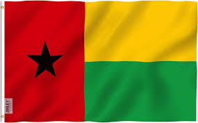

A história da Guiné-Bissau como nação africana remonta a períodos muito anteriores aos Descobrimentos. As origens da Guiné-Bissau não são conhecidas devido, em grande parte, à falta de pesquisa arqueológica. Os primeiros habitantes da região foram os Felupes ou Diolas, Manjacos, Mancanhas, Balantas, Papéis e Nalu.
